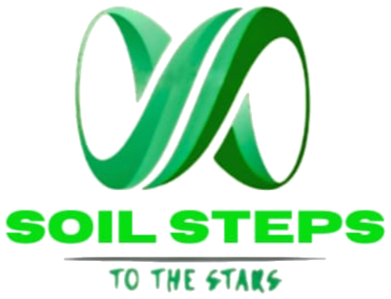

உழந்தும் உழவே தலை
Why we exist
Mechanisation has left small farms behind. We're building the machines that bring it back.
Soil Steps designs affordable micro-machinery so tools built for large landholdings finally reach the small and marginal farms that need them most.
Our Mission & Vision →